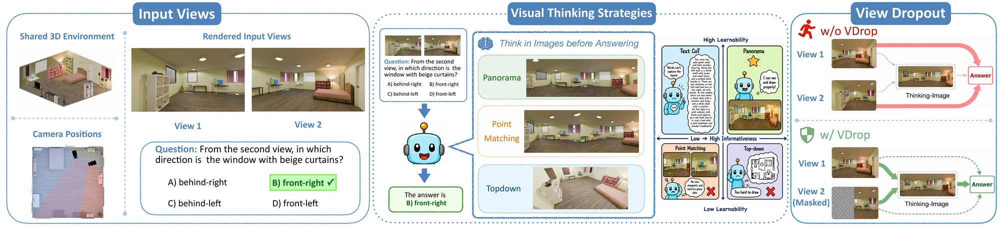
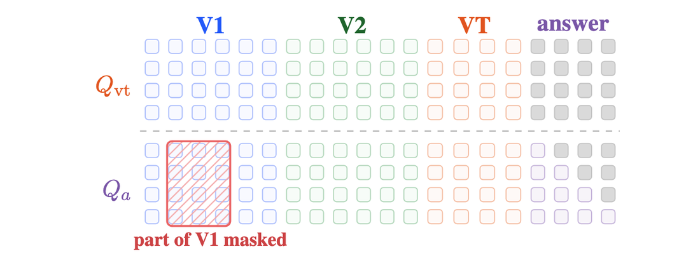
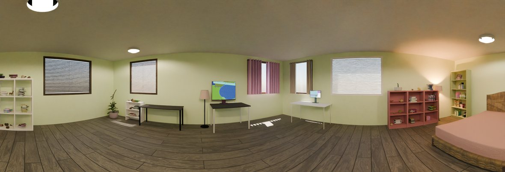
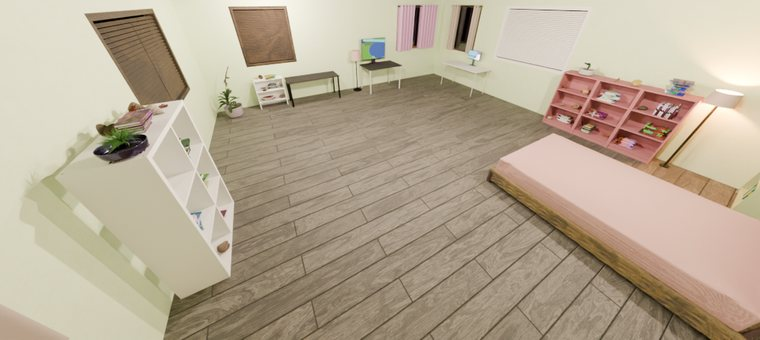
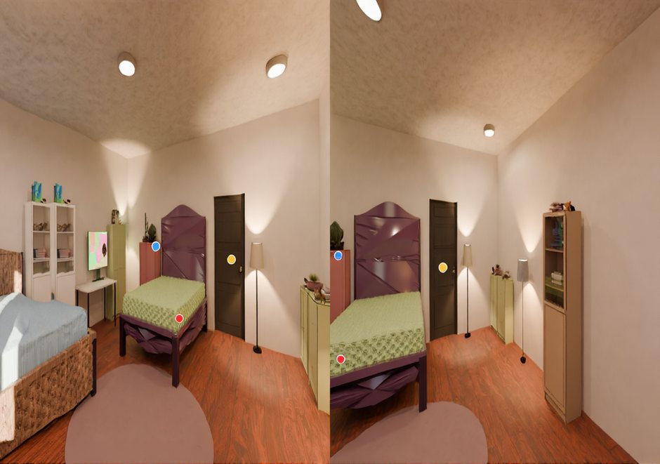
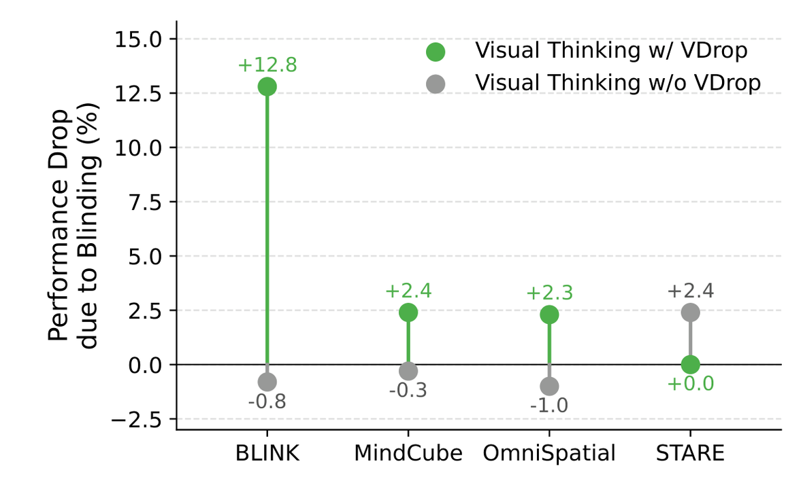
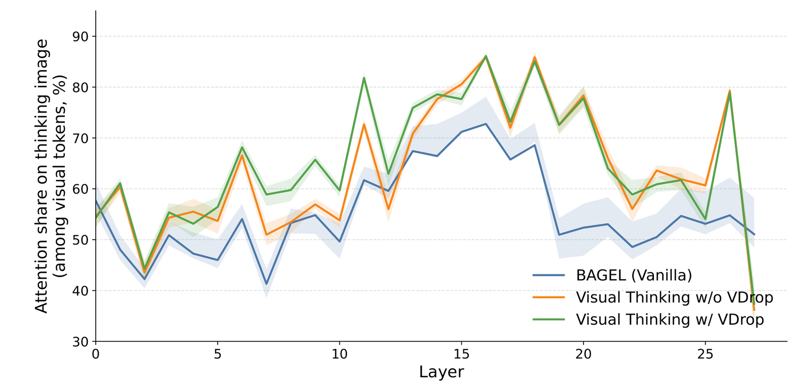

<title>How and What to Imagine? — Visual Thinking for Cross-View Spatial Reasoning</title>
<meta name="description" content="View Dropout forces a unified multimodal model to actually use the thinking-image it draws. A Learnability–Informativeness framework shows panoramic visual thinking generalizes best out-of-domain.">
<meta name="viewport" content="width=device-width, initial-scale=1">
<link rel="icon" type="image/x-icon" href="https://mila.quebec/sites/default/themes/mila_v1/favicon.ico">
<link href="https://fonts.googleapis.com/css?family=Google+Sans|Noto+Sans:400,600,700|Castoro:400,400i" rel="stylesheet">
<link rel="stylesheet" href="https://cdnjs.cloudflare.com/ajax/libs/font-awesome/6.5.2/css/all.min.css">
<link rel="stylesheet" href="https://cdn.jsdelivr.net/gh/jpswalsh/academicons@1/css/academicons.min.css">

<style>
  :root{
    --bg:#ffffff; --alt:#f5f7fa; --card:#ffffff;
    --ink:#1b1e24; --muted:#586572; --faint:#8b95a3;
    --line:#e4e9f0; --line-strong:#d3dae4;
    --accent:#1f6feb; --accent-soft:#e9f1ff; --accent-ink:#155ac9;
    --venue:#1f9d55; --btn:#363b45; --btn-hover:#12151b;
    --good:#1c7a49; --good-soft:#dcf3e6; --gold:#8a6d00; --gold-soft:#fbf1cf;
    --signal:#d9542f; --signal-soft:#fbe7df;
    --maxw:1010px;
    --sans:"Google Sans","Noto Sans",system-ui,-apple-system,"Segoe UI",Roboto,sans-serif;
    --body:"Noto Sans",system-ui,-apple-system,"Segoe UI",Roboto,Helvetica,Arial,sans-serif;
    --serif:"Castoro",Georgia,"Times New Roman",serif;
    --mono:ui-monospace,"SF Mono","JetBrains Mono",Menlo,Consolas,monospace;
  }
  *{box-sizing:border-box;}
  html{-webkit-text-size-adjust:100%; scroll-behavior:smooth;}
  @media (prefers-reduced-motion:reduce){html{scroll-behavior:auto;}}
  body{margin:0; background:var(--bg); color:var(--ink);
    font-family:var(--body); font-size:17px; line-height:1.7;
    -webkit-font-smoothing:antialiased; text-rendering:optimizeLegibility;}
  img{max-width:100%; display:block;}
  a{color:var(--accent); text-decoration:none;}
  a:hover{text-decoration:underline; text-underline-offset:3px;}
  ::selection{background:var(--accent); color:#fff;}
  :focus-visible{outline:2px solid var(--accent); outline-offset:3px; border-radius:3px;}

  .wrap{max-width:var(--maxw); margin:0 auto; padding:0 clamp(20px,5vw,40px);}
  section{padding:clamp(46px,6vw,74px) 0; border-top:1px solid var(--line);}
  section.alt{background:var(--alt);}
  h1,h2,h3{font-family:var(--sans); line-height:1.16; letter-spacing:-.01em; margin:0; text-wrap:balance;}
  code{font-family:var(--mono); font-size:.85em; background:var(--alt); border:1px solid var(--line);
    padding:1px 5px; border-radius:4px;}
  sub,sup{line-height:0;}

  /* ---------- section heading ---------- */
  .head{text-align:center; max-width:760px; margin:0 auto clamp(26px,4vw,40px);}
  .kicker{font-family:var(--sans); font-size:12.5px; font-weight:600; letter-spacing:.16em;
    text-transform:uppercase; color:var(--accent); margin-bottom:12px;}
  h2{font-size:clamp(26px,3.6vw,36px); font-weight:700;}
  .head .lead{color:var(--muted); font-size:18px; margin:14px auto 0; max-width:70ch;}

  /* ---------- hero ---------- */
  .hero{border-top:0; text-align:center; padding-top:clamp(48px,7vw,84px);
    background:radial-gradient(1200px 380px at 50% -8%, var(--accent-soft), transparent 70%);}
  .hero .tags{font-family:var(--mono); font-size:12px; letter-spacing:.12em; text-transform:uppercase;
    color:var(--faint); margin-bottom:22px;}
  .hero .tags b{color:var(--muted); font-weight:600;} .hero .tags span{margin:0 8px; color:var(--line-strong);}
  .hero h1{font-family:var(--serif); font-weight:400; font-size:clamp(32px,5vw,54px);
    letter-spacing:-.01em; line-height:1.12; margin:0 auto; max-width:none;}
  .hero .subttl{font-family:var(--serif); font-weight:400; font-size:clamp(32px,5vw,54px); color:var(--ink);
    line-height:1.14; margin:6px auto 0; max-width:none;}
  .hero .subttl .em{font-style:italic; color:var(--accent);}
  .venue{display:inline-block; margin-top:20px; font-family:var(--sans); font-weight:700; font-size:16px;
    color:var(--venue); background:var(--good-soft); border:1px solid color-mix(in srgb,var(--venue) 35%,transparent);
    border-radius:999px; padding:5px 16px; letter-spacing:.01em;}
  .authors{margin-top:24px; font-size:18px; line-height:1.7; max-width:60ch; margin-left:auto; margin-right:auto;}
  .authors a{color:var(--ink); font-weight:600;} .authors a:hover{color:var(--accent);}
  .authors sup{color:var(--accent); font-size:.62em; font-weight:600;}
  .affil{margin-top:12px; color:var(--muted); font-size:15px; line-height:1.7;}
  .affil sup{color:var(--faint);}
  .affil .contact{font-family:var(--mono); font-size:12.5px; color:var(--faint);}

  .links{display:flex; justify-content:center; flex-wrap:wrap; gap:12px; margin-top:28px;}
  .lbtn{display:inline-flex; align-items:center; gap:9px; background:var(--btn); color:#fff;
    font-family:var(--sans); font-weight:500; font-size:15px; padding:10px 20px; border-radius:999px;
    transition:background .15s, transform .15s;}
  .lbtn:hover{background:var(--btn-hover); text-decoration:none; transform:translateY(-1px); color:#fff;}
  .lbtn i{font-size:16px; opacity:.95;}
  .lbtn .stack{display:inline-flex; flex-direction:column; line-height:1.18; text-align:left;}
  .lbtn .stack b{font-weight:600;}
  .lbtn .stack small{font-size:11px; font-weight:400; opacity:.82; letter-spacing:.01em;}

  /* ---------- figures ---------- */
  figure{margin:0;}
  .fig{margin-top:clamp(28px,4vw,44px);}
  .fig .mat{background:#fff; border:1px solid var(--line-strong); border-radius:12px;
    padding:clamp(12px,2vw,20px); box-shadow:0 1px 3px rgba(20,30,50,.05);}
  .fig.scroll .inner{overflow-x:auto;} .fig.scroll .mat{min-width:760px;}
  .cap{color:var(--muted); font-size:14.5px; line-height:1.6; margin:14px auto 0; max-width:88ch; text-align:center;}
  .cap b{color:var(--ink);}

  /* ---------- cards ---------- */
  .grid{display:grid; gap:18px;}
  .g3{grid-template-columns:repeat(3,1fr);} .g2{grid-template-columns:1fr 1fr;}
  @media (max-width:840px){.g3{grid-template-columns:1fr;}}
  @media (max-width:620px){.g2{grid-template-columns:1fr;}}
  .card{background:var(--card); border:1px solid var(--line); border-radius:14px; padding:24px 22px;
    box-shadow:0 1px 3px rgba(20,30,50,.04);}
  .card .num{font-family:var(--sans); font-size:12px; font-weight:600; letter-spacing:.08em;
    text-transform:uppercase; color:var(--accent);}
  .card h3{font-size:18px; font-weight:700; margin:10px 0 8px;}
  .card p{margin:0; color:var(--muted); font-size:15px; line-height:1.65;}
  .card.accent{border-color:color-mix(in srgb,var(--accent) 45%,var(--line)); box-shadow:0 4px 18px rgba(31,111,235,.10);}
  .mode{font-family:var(--mono); font-size:12.5px; background:var(--alt); border:1px solid var(--line);
    border-radius:6px; padding:2px 9px; display:inline-block;}
  .lead{color:var(--muted);}
  .prose{font-size:17px; line-height:1.8;} .prose p{margin:0 0 1em;} .prose b{color:var(--ink);}

  /* strategy tiles */
  .shot{border:1px solid var(--line-strong); border-radius:10px; overflow:hidden; background:#fff;
    box-shadow:0 1px 3px rgba(20,30,50,.05);}
  .shot.pick{border-color:var(--accent); box-shadow:0 4px 18px rgba(31,111,235,.14);}

  /* ---------- stats ---------- */
  .stats{display:grid; grid-template-columns:repeat(4,1fr); gap:14px; margin-top:8px;}
  @media (max-width:760px){.stats{grid-template-columns:repeat(2,1fr);}}
  .stat{background:var(--card); border:1px solid var(--line); border-radius:12px; padding:20px 18px; text-align:center;}
  .stat b{display:block; font-family:var(--sans); font-size:clamp(24px,3vw,32px); font-weight:700;
    color:var(--accent); font-variant-numeric:tabular-nums;}
  .stat span{font-size:12.5px; color:var(--muted); display:block; margin-top:6px; line-height:1.5;}

  /* ---------- tables ---------- */
  .tscroll{overflow-x:auto; border:1px solid var(--line); border-radius:14px; background:var(--card); margin-top:22px;}
  table{border-collapse:collapse; width:100%; font-size:13.5px; min-width:720px;}
  caption{text-align:left; padding:15px 18px 4px; color:var(--muted); font-size:13.5px; line-height:1.5;}
  th,td{padding:9px 11px; text-align:right; border-bottom:1px solid var(--line);
    font-variant-numeric:tabular-nums; white-space:nowrap;}
  th:first-child,td:first-child{text-align:left;}
  thead th{font-family:var(--sans); font-size:11px; letter-spacing:.03em; text-transform:uppercase;
    color:var(--muted); font-weight:600; border-bottom:1.5px solid var(--line-strong); vertical-align:bottom;}
  thead tr.grp th{text-align:center; color:var(--faint); border-bottom:1px solid var(--line); padding-bottom:5px; font-weight:600;}
  tbody tr:hover td{background:color-mix(in srgb,var(--accent-soft) 55%,transparent);}
  tr.grouphead td{font-family:var(--sans); font-size:11px; letter-spacing:.08em; text-transform:uppercase;
    color:var(--faint); font-weight:600; background:var(--alt); padding:7px 11px;}
  td.avg,th.avg{background:color-mix(in srgb,var(--accent-soft) 70%,transparent); font-weight:600;}
  .bt{font-weight:700; color:var(--good); background:var(--good-soft); border-radius:5px; padding:1px 6px;}
  .sd{color:var(--gold); background:var(--gold-soft); border-radius:5px; padding:1px 6px; text-decoration:underline;}
  .vd{font-family:var(--mono); color:var(--accent); font-weight:700;} .vx{font-family:var(--mono); color:var(--faint);}
  .pos{color:var(--good); font-weight:600;} .neg{color:var(--signal); font-weight:600;} .zer{color:var(--faint);}
  .tnote{color:var(--muted); font-size:14.5px; margin-top:14px;}

  /* ---------- findings ---------- */
  .finding{background:var(--accent-soft); border:1px solid color-mix(in srgb,var(--accent) 30%,transparent);
    border-left:4px solid var(--accent); border-radius:12px; padding:18px 22px; margin-top:24px;
    display:grid; grid-template-columns:auto 1fr; gap:16px; align-items:start;}
  .finding .fn{font-family:var(--sans); font-size:12px; font-weight:700; letter-spacing:.08em;
    text-transform:uppercase; color:var(--accent-ink); white-space:nowrap; padding-top:2px;}
  .finding p{margin:0; color:var(--ink); font-size:15.5px; line-height:1.7;}
  .finding b{color:var(--accent-ink);}

  /* ---------- citation ---------- */
  pre{margin:0; font-family:var(--mono); font-size:13px; line-height:1.65; color:var(--ink);
    background:var(--card); border:1px solid var(--line); border-radius:14px; padding:22px; overflow-x:auto;}
  pre .k{color:var(--accent);} pre .v{color:var(--signal);}

  footer{border-top:1px solid var(--line); padding:34px 0 52px; color:var(--faint);
    font-family:var(--sans); font-size:13.5px;}
  footer .wrap{display:flex; justify-content:space-between; gap:16px; flex-wrap:wrap;}
  footer a{color:var(--muted);}

  .reveal{opacity:0; transform:translateY(14px); transition:opacity .6s ease, transform .6s ease;}
  .reveal.in{opacity:1; transform:none;}
  @media (prefers-reduced-motion:reduce){.reveal{opacity:1; transform:none; transition:none;}}
</style>

<!-- ===================== HERO ===================== -->
<header class="hero">
  <div class="wrap">
    <h1>How and What to Imagine?</h1>
    <div class="subttl"><span class="em">Visual Thinking</span> in Unified Multimodal Models for Cross-View Spatial Reasoning</div>
    <div class="venue">Accepted to EMNLP 2026 🎉</div>

    <div class="authors">
      <a href="https://mylittlechange.github.io/" target="_blank">Qian Yang</a><sup>1,2</sup>,
      Ankur Sikarwar<sup>*,1,2</sup>,
      Huy Le<sup>*,1,2</sup>,
      Le Zhang<sup>1,2</sup>,
      Zhuan Shi<sup>1,3</sup>,
      Perouz Taslakian<sup>1,3,4</sup>,
      Aishwarya Agrawal<sup>1,2,5</sup>
    </div>
    <div class="affil">
      <sup>1</sup>Mila – Québec AI Institute &nbsp;·&nbsp; <sup>2</sup>Université de Montréal &nbsp;·&nbsp;
      <sup>3</sup>McGill University &nbsp;·&nbsp; <sup>4</sup>ServiceNow AI Research &nbsp;·&nbsp;
      <sup>5</sup>Canada CIFAR AI Chair<br>
      <span class="contact"><sup>*</sup> Equal contribution &nbsp;·&nbsp; {qian.yang, aishwarya.agrawal}@mila.quebec</span>
    </div>

    <div class="links">
      <a class="lbtn" href="https://arxiv.org/abs/2605.27310" target="_blank" rel="noopener"><i class="ai ai-arxiv"></i> arXiv</a>
      <a class="lbtn" href="https://github.com/MyLittleChange/VDrop" target="_blank" rel="noopener"><i class="fa-brands fa-github"></i> Code</a>
      <a class="lbtn" href="https://huggingface.co/datasets/QianYangMILA/vdrop-crossview-8k" target="_blank" rel="noopener"><i class="fa-solid fa-database"></i> <span class="stack"><b>Dataset</b><small>8K cross-view QA · 3 reasoning images</small></span></a>
    </div>

    <div class="fig scroll">
      <div class="inner"><div class="mat"></div></div>
      <p class="cap"><b>Figure 1.</b> Given two input views and a cross-view spatial question (<b>left</b>), a unified
        multimodal model generates one of three thinking-image types (<b>middle</b>) before answering. <b>Right:</b>
        without View Dropout the answer shortcuts through the input views, leaving the thinking-image unused; with
        View Dropout, part of one input view is masked, forcing the answer to route through the thinking-image and
        making visual thinking causally load-bearing.</p>
    </div>
  </div>
</header>

<!-- ===================== CONTRIBUTIONS ===================== -->
<section class="alt reveal">
  <div class="wrap">
    <div class="head"><div class="kicker">Contributions</div><h2>What this paper contributes</h2></div>
    <div class="grid g3">
      <div class="card accent"><span class="num">Method</span><h3>View Dropout (VDrop)</h3>
        <p>A training-time intervention that hides part of one input view from the answer span while leaving it
          visible to the thinking-image. No architecture change; agnostic to the image type; consistently improves
          OOD reasoning across all three variants.</p></div>
      <div class="card"><span class="num">Framework</span><h3>Learnability–Informativeness</h3>
        <p>We disentangle two axes prior work conflated: a thinking-image helps only if it is both
          <b>informative</b> (reveals spatial structure) and <b>learnable</b> (the model can actually render it).
          Neither axis alone is enough.</p></div>
      <div class="card"><span class="num">Empirical</span><h3>8K beats 3× more data</h3>
        <p>On 1 in-domain and 5 real-world OOD benchmarks, the thinking-image becomes causally used only after
          VDrop. Panoramic + VDrop, trained on <b>8K samples</b>, is the best config and beats prior BAGEL methods
          trained on ≥3× the data.</p></div>
    </div>
  </div>
</section>

<!-- ===================== ABSTRACT ===================== -->
<section class="reveal">
  <div class="wrap" style="max-width:820px;">
    <div class="head"><div class="kicker">Abstract</div><h2>Thinking with images that actually get used</h2></div>
    <div class="prose">
      <p>Cross-view spatial reasoning remains a weak spot for vision-language models: they reason in language and
        discard the fine-grained geometry the task requires. Thinking with images aims to fix this by generating an
        intermediate thinking-image — but recent work shows the visual evidence in these traces is largely ignored.</p>
      <p>We ask <b>how</b> to make visual thinking matter and <b>what kind</b> works best, for unified multimodal
        models that natively generate interleaved image–text. For the <b>how</b>, we propose <b>View Dropout
        (VDrop)</b>, which hides parts of one input view from the answer span while leaving it visible to the
        thinking-image tokens — incentivizing the model to route its answer through the generated image. For the
        <b>what</b>, we frame the choice as a <b>Learnability–Informativeness (L–I) tradeoff</b> and compare
        top-down, panoramic, and point-matching renderings. Trained on synthetic scenes and evaluated on five
        real-world OOD benchmarks, <b>panoramic visual thinking with VDrop is the only configuration that is
        simultaneously informative and learnable</b>, and achieves the best out-of-domain generalization.</p>
    </div>
  </div>
</section>

<!-- ===================== METHOD: VDROP ===================== -->
<section class="alt reveal">
  <div class="wrap">
    <div class="head"><div class="kicker">Method · How to imagine</div><h2>View Dropout removes the shortcut</h2>
      <p class="lead">Standard SFT supervises both the thinking-image and the answer, but never forces the answer to
        <em>depend</em> on the image. The full layout is already recoverable from the two input views, so the model
        takes a shortcut — the generated image becomes a decorative by-product.</p></div>
    <div class="grid g2" style="align-items:center;">
      <div style="display:grid; gap:18px;">
        <div class="card"><span class="num">Attention mask</span><h3>Hide one view from the answer only</h3>
          <p>Sample one view and a contiguous rectangle covering a fraction ρ of its patches. Block the answer span
            from attending to that region — in <b>both</b> the ViT and VAE token streams — while the thinking-image
            keeps full attention to both views. The missing layout is now recoverable only through the generated
            image.</p></div>
        <div class="card"><span class="num">Curriculum</span><h3>Warm up, then anneal the pressure</h3>
          <p>Masking from step 0 collapses learning. We keep p<sub>mask</sub>=0 for a 500-step warmup, ramp linearly
            over 1500 steps, then hold at 1 — so a working image→answer route exists by the time the view is fully
            masked. Default ρ=0.5, contiguous region, one view.</p></div>
        <div class="card"><span class="num">Compatibility</span><h3>Only the mask changes</h3>
          <p>VDrop modifies the answer-side attention mask and nothing else: the SFT objective is unchanged, the
            thinking-image is still generated from the full views and supervised toward its ground-truth render. It
            works with any thinking-image strategy.</p></div>
      </div>
      <figure class="fig" style="margin-top:0;">
        <div class="mat"></div>
        <figcaption class="cap"><b>VDrop attention mask.</b> Answer queries <i>Q<sub>a</sub></i> cannot attend to the
          masked region of V1 (red hatched), while thinking-image queries <i>Q</i><sub>vt</sub> retain full access to
          both input views — so the masked evidence reaches the answer only through the generated thinking-image.</figcaption>
      </figure>
    </div>
  </div>
</section>

<!-- ===================== STRATEGIES ===================== -->
<section class="reveal">
  <div class="wrap">
    <div class="head"><div class="kicker">What to imagine · three strategies</div><h2>Three ways to bridge two views</h2></div>
    <div class="grid g3">
      <figure>
        <div class="shot pick"></div>
        <h3 style="margin:14px 0 6px;"><span class="mode">Panorama</span></h3>
        <p class="lead" style="font-size:15px; margin:0;">A wide-angle rendering from the observer's pose that
          <b>reconstructs the full scene</b>, so V1 and V2 become sub-regions of one unified visual field.</p>
      </figure>
      <figure>
        <div class="shot"></div>
        <h3 style="margin:14px 0 6px;"><span class="mode">Top-down</span></h3>
        <p class="lead" style="font-size:15px; margin:0;">A high-angle rendering from a top corner that <b>lifts to a
          shared external frame</b>, exposing global layout while still revealing object sides and depth.</p>
      </figure>
      <figure>
        <div class="shot"></div>
        <h3 style="margin:14px 0 6px;"><span class="mode">Point matching</span></h3>
        <p class="lead" style="font-size:15px; margin:0;">The two views side by side with coloured markers on
          corresponding objects — <b>makes cross-view identity explicit</b> without changing the camera frame.</p>
      </figure>
    </div>
  </div>
</section>

<!-- ===================== TRAINING DATA ===================== -->
<section class="alt reveal">
  <div class="wrap">
    <div class="head"><div class="kicker">Training data</div><h2>An 8K training set with ground-truth thinking-images</h2>
      <p class="lead">Built from <b>Infinigen Indoors</b> procedural 3D scenes — so every sample comes with an
        <b>unambiguous ground-truth answer</b> and, uniquely, <b>ground-truth renders of all three thinking-image
        types</b>. Each scene provides two egocentric views with overlapping fields of view; questions follow the
        COSMIC benchmark's four cross-view types.</p></div>

    <div class="stats">
      <div class="stat"><b>7,921</b><span>QA pairs</span></div>
      <div class="stat"><b>1,584</b><span>unique 3D scenes</span></div>
      <div class="stat"><b>4</b><span>cross-view question types</span></div>
      <div class="stat"><b>3</b><span>GT thinking-images / scene<br>(pano · top-down · point-match)</span></div>
    </div>

    <div class="tscroll">
      <table style="min-width:640px;">
        <caption>The four cross-view question types. Every question requires integrating spatial information from <em>both</em> views.</caption>
        <thead><tr><th>Type</th><th style="text-align:left;">Task</th><th style="text-align:left;">Example question</th></tr></thead>
        <tbody>
          <tr><td><span class="mode">Anchor</span></td><td style="text-align:left; white-space:normal;">Identify an object visible in both views.</td><td style="text-align:left; white-space:normal;">“Which object appears in both views?”</td></tr>
          <tr><td><span class="mode">Counting</span></td><td style="text-align:left; white-space:normal;">Count total instances of a given object across views.</td><td style="text-align:left; white-space:normal;">“How many chairs are in the scene?”</td></tr>
          <tr><td><span class="mode">Rel-Distance</span></td><td style="text-align:left; white-space:normal;">Identify the closest or farthest object from a reference.</td><td style="text-align:left; white-space:normal;">“Which object is closest to the desk?”</td></tr>
          <tr><td><span class="mode">Rel-Direction</span></td><td style="text-align:left; white-space:normal;">Identify the direction of an object relative to a reference.</td><td style="text-align:left; white-space:normal;">“Which side of the sofa is the lamp on?”</td></tr>
        </tbody>
      </table>
    </div>
    <p class="tnote">Each training trace is the full interleaved sequence (V<sub>1</sub>, V<sub>2</sub>, q) →
      thinking-image → answer, supervising the model end-to-end. With only these 8K synthetic samples, the best
      configuration surpasses prior BAGEL-based methods trained on 3×–23× more data — the bottleneck is the training
      signal, not scale.</p>
  </div>
</section>

<!-- ===================== MAIN RESULTS ===================== -->
<section class="reveal">
  <div class="wrap">
    <div class="head"><div class="kicker">Main results</div><h2>Panoramic + VDrop generalizes best out-of-domain</h2>
      <p class="lead">Accuracy (%). Everything below the prior-work block is BAGEL fine-tuned on the same 8K Infinigen
        data. <span class="bt">Green</span> = best per column, <span class="sd">gold</span> = second. OOD is the mean
        over five real-world benchmarks — our primary, unsaturated metric.</p></div>

    <div class="tscroll">
      <table>
        <thead>
          <tr class="grp"><th></th><th></th><th colspan="4">COSMIC · in-domain</th><th class="avg"></th><th colspan="6">Real-world · out-of-domain</th><th class="avg"></th></tr>
          <tr><th>Model</th><th>VDrop</th><th>Anchor</th><th>Count</th><th>R-Dist</th><th>R-Dir</th><th class="avg">ID</th><th>MMSI</th><th>MindC.</th><th>Omni-CL</th><th>Omni-PT</th><th>STARE</th><th>BLINK</th><th class="avg">OOD</th></tr>
        </thead>
        <tbody>
          <tr class="grouphead"><td colspan="13">Understanding-only VLMs</td></tr>
          <tr><td>Qwen3-VL-4B</td><td class="vx">✗</td><td>62.8</td><td>44.4</td><td>40.4</td><td>22.4</td><td class="avg">42.5</td><td>27.4</td><td>29.0</td><td>28.6</td><td>40.1</td><td>29.2</td><td>48.9</td><td class="avg">33.8</td></tr>
          <tr><td>Qwen3-VL-8B</td><td class="vx">✗</td><td>64.8</td><td>54.4</td><td>40.8</td><td>26.8</td><td class="avg">46.7</td><td>28.0</td><td>34.4</td><td>25.4</td><td><span class="bt">45.5</span></td><td>31.6</td><td>55.6</td><td class="avg">37.0</td></tr>
          <tr class="grouphead"><td colspan="13">BAGEL-based prior work</td></tr>
          <tr><td>BAGEL <span class="zer">(vanilla)</span></td><td class="vx">✗</td><td>18.0</td><td>42.1</td><td>24.4</td><td>21.2</td><td class="avg">26.4</td><td>26.9</td><td>31.7</td><td>31.1</td><td>38.9</td><td>28.0</td><td>45.1</td><td class="avg">33.3</td></tr>
          <tr><td>BAGEL-Zebra-CoT <span class="zer">(182K)</span></td><td class="vx">✗</td><td>8.8</td><td>24.4</td><td>28.4</td><td>24.8</td><td class="avg">21.6</td><td>23.2</td><td>21.7</td><td>29.0</td><td>43.0</td><td>28.4</td><td>24.8</td><td class="avg">26.8</td></tr>
          <tr><td>ThinkMorph <span class="zer">(24K)</span></td><td class="vx">✗</td><td>49.6</td><td>43.6</td><td>32.0</td><td>30.0</td><td class="avg">38.8</td><td>26.5</td><td><span class="sd">39.2</span></td><td>33.7</td><td>44.6</td><td>28.8</td><td>52.6</td><td class="avg">37.2</td></tr>
          <tr class="grouphead"><td colspan="13">BAGEL + 8K · non-visual baselines</td></tr>
          <tr><td>No-Think</td><td class="vx">✗</td><td>86.8</td><td>82.4</td><td>67.6</td><td>85.6</td><td class="avg">80.6</td><td>27.4</td><td><span class="bt">41.1</span></td><td>30.2</td><td>44.0</td><td>24.8</td><td>45.1</td><td class="avg">35.1</td></tr>
          <tr><td>Text CoT</td><td class="vx">✗</td><td>56.0</td><td>60.4</td><td>44.4</td><td>40.8</td><td class="avg">50.4</td><td>24.6</td><td>25.3</td><td>29.4</td><td>35.8</td><td>26.0</td><td>54.9</td><td class="avg">32.7</td></tr>
          <tr class="grouphead"><td colspan="13">BAGEL + 8K · visual thinking (ours)</td></tr>
          <tr><td>Panoramic</td><td class="vx">✗</td><td><span class="sd">93.6</span></td><td><span class="bt">83.6</span></td><td><span class="sd">76.4</span></td><td>87.2</td><td class="avg">85.2</td><td>24.9</td><td>36.9</td><td>32.9</td><td>43.9</td><td>32.4</td><td>55.6</td><td class="avg"><span class="sd">37.6</span></td></tr>
          <tr><td><b>Panoramic</b></td><td class="vd">✓</td><td>89.2</td><td>78.8</td><td>74.8</td><td><span class="sd">93.2</span></td><td class="avg">84.0</td><td>26.0</td><td>34.1</td><td><span class="bt">38.9</span></td><td><span class="sd">45.3</span></td><td><span class="bt">35.6</span></td><td><span class="bt">62.4</span></td><td class="avg"><span class="bt">40.0</span> <span class="pos">+2.4</span></td></tr>
          <tr><td>Point Matching</td><td class="vx">✗</td><td>92.8</td><td>81.2</td><td>73.2</td><td><span class="bt">94.4</span></td><td class="avg"><span class="bt">85.4</span></td><td>27.8</td><td>35.2</td><td>31.0</td><td>41.7</td><td>24.0</td><td>52.6</td><td class="avg">35.2</td></tr>
          <tr><td>Point Matching</td><td class="vd">✓</td><td>92.8</td><td>78.8</td><td><span class="bt">78.0</span></td><td>91.6</td><td class="avg"><span class="sd">85.3</span></td><td>28.3</td><td>34.1</td><td><span class="sd">33.7</span></td><td>43.3</td><td><span class="sd">34.4</span></td><td>45.1</td><td class="avg">36.1 <span class="pos">+0.9</span></td></tr>
          <tr><td>Top-down</td><td class="vx">✗</td><td>93.6</td><td><span class="sd">83.2</span></td><td>68.4</td><td>92.0</td><td class="avg">84.3</td><td><span class="sd">28.8</span></td><td>35.2</td><td>31.4</td><td>39.8</td><td>28.0</td><td><span class="sd">58.7</span></td><td class="avg">37.3</td></tr>
          <tr><td>Top-down</td><td class="vd">✓</td><td><span class="bt">94.4</span></td><td>76.8</td><td>72.0</td><td>89.2</td><td class="avg">83.1</td><td><span class="bt">32.0</span></td><td>36.5</td><td>32.5</td><td>44.2</td><td>26.0</td><td>57.1</td><td class="avg">38.0 <span class="pos">+0.7</span></td></tr>
        </tbody>
      </table>
    </div>
    <div class="finding"><span class="fn">Finding 1</span>
      <p>Visual thinking beats non-visual baselines on both ID and OOD. VDrop then lifts the OOD average for every
        strategy — panoramic 37.6→<b>40.0</b>, a <b>+6.7</b> gain over vanilla BAGEL and above Qwen3-VL-8B, using
        only 8K samples. Text CoT actually <em>hurts</em>: inconsistent textual supervision is worse than none.</p>
    </div>
  </div>
</section>

<!-- ===================== GENERATE-THEN-BLIND ===================== -->
<section class="alt reveal">
  <div class="wrap">
    <div class="head"><div class="kicker">Is the thinking-image causally used?</div><h2>Generate, then blind</h2>
      <p class="lead">The model draws the thinking-image as usual; then, before answering, we mask the answer span's
        attention to it. It still "thinks" — but answers without consulting the image. A model that genuinely uses
        the image should lose accuracy; one that ignores it stays flat.</p></div>

    <div class="grid g2" style="align-items:start;">
      <figure class="fig" style="margin-top:0;">
        <div class="mat"></div>
        <figcaption class="cap"><b>Generate-then-blind.</b> Accuracy drop when the generated thinking-image is blinded
          at answer time; a larger drop means more dependence. The VDrop model drops substantially (BLINK −12.8)
          while standard SFT is nearly invariant.</figcaption>
      </figure>
      <figure class="fig" style="margin-top:0;">
        <div class="mat"></div>
        <figcaption class="cap"><b>Attention by layer (BLINK).</b> The thinking-image's share of the answer span's
          visual attention rises from 55.3% (vanilla) to 63.6% (SFT) to <b>65.2%</b> (VDrop), with the gap widening
          in early and mid decoder layers.</figcaption>
      </figure>
    </div>

    <div class="finding"><span class="fn">Finding 2</span>
      <p>VDrop makes the thinking-image <b>load-bearing</b>: blinding it drops accuracy substantially while standard
        SFT is nearly invariant, and answer-token attention to the image rises — confirming the causal dependence
        VDrop is designed to induce.</p>
    </div>
  </div>
</section>

<!-- ===================== L-I TRADEOFF ===================== -->
<section class="reveal">
  <div class="wrap">
    <div class="head"><div class="kicker">What to imagine · the L–I tradeoff</div>
      <h2>Informative <span style="color:var(--faint);">and</span> learnable — panorama is the only one</h2>
      <p class="lead">A thinking-image helps only if a perfect instance would reduce the reasoning burden
        (<b>informativeness</b>) <em>and</em> the model can actually render it faithfully (<b>learnability</b>). We
        measure each on a paired COSMIC subset — panorama sits in the informative-and-learnable corner; top-down is
        informative but hard to draw; point matching is learnable but adds little new geometry.</p></div>

    <div class="grid g2" style="align-items:start;">
      <div class="tscroll" style="margin-top:0;">
        <table style="min-width:0;">
          <caption><b>Informativeness I(T)</b> — Δ accuracy when a <em>ground-truth</em> render is given to a frozen reader (Qwen3-VL-235B).</caption>
          <thead><tr><th>Oracle Δ</th><th>Anchor</th><th>Count</th><th>R-Dist</th><th>R-Dir</th><th class="avg">Overall</th></tr></thead>
          <tbody>
            <tr><td>Input views only</td><td>73.2</td><td>66.1</td><td>49.5</td><td>39.1</td><td class="avg">56.7</td></tr>
            <tr><td>+ Panorama</td><td class="pos">+0.6</td><td class="pos">+9.8</td><td class="pos">+15.3</td><td class="pos">+16.8</td><td class="avg"><span class="bt">+10.8</span></td></tr>
            <tr><td>+ Top-down</td><td class="neg">−6.5</td><td class="neg">−1.1</td><td class="pos">+10.0</td><td class="pos">+8.4</td><td class="avg">+2.9</td></tr>
            <tr><td>+ Point matching</td><td class="zer">0.0</td><td class="neg">−9.3</td><td class="zer">0.0</td><td class="pos">+6.2</td><td class="avg">−0.8</td></tr>
          </tbody>
        </table>
      </div>
      <div class="tscroll" style="margin-top:0;">
        <table style="min-width:0;">
          <caption><b>Learnability L(T)</b> — same test, but the render is <em>generated by BAGEL</em> after VDrop training.</caption>
          <thead><tr><th>Generated Δ</th><th>Anchor</th><th>Count</th><th>R-Dist</th><th>R-Dir</th><th class="avg">Overall</th></tr></thead>
          <tbody>
            <tr><td>+ Panorama (gen)</td><td class="neg">−13.7</td><td class="pos">+3.3</td><td class="pos">+2.6</td><td class="pos">+6.7</td><td class="avg"><span class="bt">0.0</span></td></tr>
            <tr><td>+ Top-down (gen)</td><td class="neg">−13.1</td><td class="neg">−2.2</td><td class="pos">+8.4</td><td class="pos">+2.8</td><td class="avg">−0.7</td></tr>
            <tr><td>+ Point match (gen)</td><td class="neg">−0.6</td><td class="neg">−2.2</td><td class="neg">−3.7</td><td class="neg">−0.6</td><td class="avg">−1.8</td></tr>
          </tbody>
        </table>
      </div>
    </div>

    <div class="finding"><span class="fn">Finding 3</span>
      <p>Top-down is informative but only partially learnable — BAGEL captures its layout only in part. Point matching
        is limited by low informativeness. <b>Panorama alone scores high on both axes</b>: its generated renders
        still carry spatial structure a frozen reader can use, and it is the only strategy that consistently beats
        prior methods on OOD.</p>
    </div>
  </div>
</section>

<!-- ===================== CITATION ===================== -->
<section class="alt reveal">
  <div class="wrap" style="max-width:900px;">
    <div class="head"><div class="kicker">Citation</div><h2>Cite this work</h2></div>
    <pre><span class="k">@article</span>{yang2026and,
  title     = {<span class="v">How and What to Imagine? Visual Thinking in Unified
               Multimodal Models for Cross-View Spatial Reasoning</span>},
  author    = {Yang, Qian and Sikarwar, Ankur and Le, Huy and Zhang, Le and
               Shi, Zhuan and Taslakian, Perouz and Agrawal, Aishwarya},
  journal   = {<span class="v">arXiv preprint arXiv:2605.27310</span>},
  year      = {2026}
}</pre>
    <p class="lead" style="margin-top:20px; text-align:center;">Built on
      <a href="https://github.com/ByteDance-Seed/Bagel">BAGEL</a> (ByteDance-Seed, Apache-2.0). Training data
      rendered with <a href="https://github.com/princeton-vl/infinigen">Infinigen Indoors</a>. View Dropout modifies
      only the answer-side attention mask and is compatible with any thinking-image strategy.</p>
  </div>
</section>

<footer>
  <div class="wrap">
    <span>How and What to Imagine? · Visual Thinking for Cross-View Spatial Reasoning</span>
    <span>Mila – Québec AI Institute · EMNLP 2026</span>
  </div>
</footer>

<script>
  (function(){
    var els = document.querySelectorAll('.reveal');
    if(!('IntersectionObserver' in window) || matchMedia('(prefers-reduced-motion: reduce)').matches){
      els.forEach(function(e){ e.classList.add('in'); }); return;
    }
    var io = new IntersectionObserver(function(en){
      en.forEach(function(x){ if(x.isIntersecting){ x.target.classList.add('in'); io.unobserve(x.target); } });
    }, { threshold:.08, rootMargin:'0px 0px -6% 0px' });
    els.forEach(function(e){ io.observe(e); });
  })();
</script>
